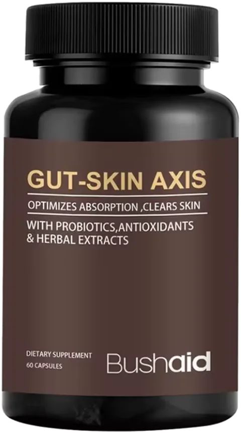
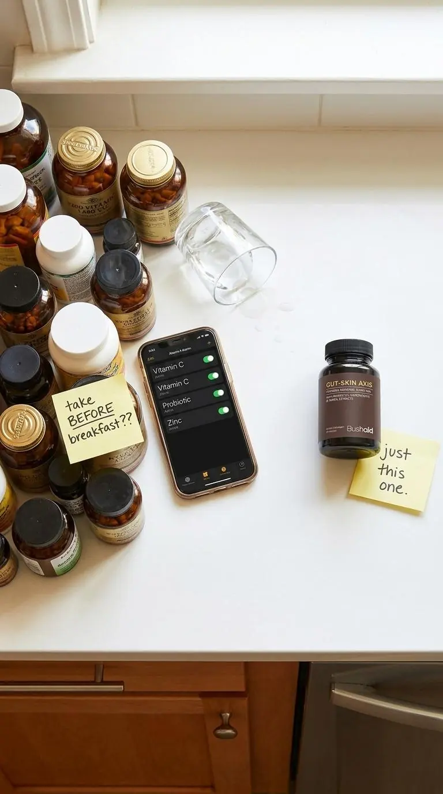
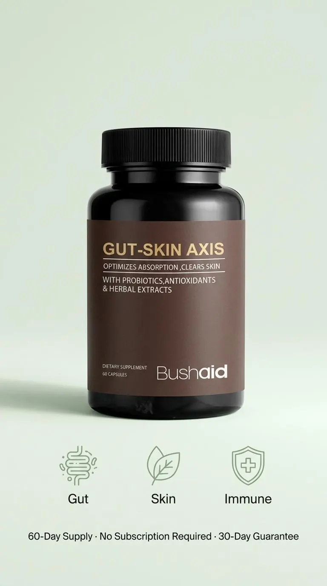

1 Bottle
60-day supply
$49.99
Choose 1 bottle
A discovery dermatologists ignored for 80 years

60 capsules · 60-day supply
In 1930, two doctors proposed that the gut and the skin are directly connected. Their idea was forgotten for nearly a century. Today researchers call it the gut-skin axis, and it may explain why nothing you've tried has worked.
From $42.49/bottle · 30-day money-back guarantee
You eat well. You've tried a probiotic.
So why are you still bloated, and still breaking out?
Maybe you've been on this loop for months. You eat carefully, you read the labels, you spent real money on a probiotic everyone said worked. For a week or two something shifted. Then it faded.
Your skin still isn't cooperating. Your gut still bloats at meals you should be able to eat. You still catch whatever's going around.
And the quiet conclusion you've started to reach is that maybe it's just you.
It isn't you. But it might be what every probiotic you've tried was designed to ignore.
Rewind to
1930
The year two dermatologists first proposed that your gut and your skin are directly connected, and recommended Lactobacillus acidophilus cultures as part of the answer. Their paper was largely forgotten for the next 80 years.
The discovery
In 1930, Dr. John Stokes and Dr. Donald Pillsbury proposed that what happens inside your gut can directly drive what shows up on your skin.
They believed stress changed gut bacteria, increased intestinal permeability, and triggered the kind of inflammation that shows up as breakouts, redness and irritation. Their remedy included Lactobacillus acidophilus cultures, the same strain now in BushAid.
The gut and the skin are connected through a system of shared inflammation. When one is out of balance, the other will show it.
Paraphrased from the original 1930 paper, later reviewed in Gut Pathogens (Bowe & Logan, 2011)
In 2011, researchers Bowe and Logan revived the work and found modern research had quietly validated many of its core ideas. Today it's called the gut-skin axis. Most probiotics on the shelf still haven't caught up.
The real reason
Most probiotics were designed for one job: digestion. For that narrow job, many work reasonably well, for a while.
But the bacteria in a typical probiotic behave more like houseguests than residents. They help while they're around, then they leave. That's why so many people feel better for a week or two and drift back.
Sound familiar?
None of that is your fault. Research has also found that people with frequent breakouts tend to have lower zinc levels, and most probiotics contain no zinc at all.

Not a bigger CFU number. Not more strains. A formula that finally takes the gut-skin axis seriously, the way Stokes and Pillsbury said someone should.
What's inside
5 Billion CFU
Five Lactobacillus strains, including L. acidophilus, the culture Stokes & Pillsbury recommended in 1930.
The research
Researchers revisited Stokes & Pillsbury's 1930 gut-skin theory and found that modern science supports many of its core ideas, including a role for probiotics.
Bowe & Logan, Gut Pathogens, 2011
10mg · 91% DV
Supports normal skin and immune function. The ingredient most probiotics leave out.
The research
Pooling 12 studies of nearly 1,300 people, researchers found that people with acne had significantly lower blood zinc levels than people without it.
Yee et al., Dermatologic Therapy, 2020
50mg · 56% DV
An antioxidant that supports collagen formation and your body's natural defenses.
The research
Healthy skin holds high levels of vitamin C, which it relies on to build collagen and to protect itself from oxidative stress.
Pullar, Carr & Vissers, Nutrients, 2017
30mg
Known for helping skin hold on to moisture, for that soft, hydrated feel.
The research
In a placebo-controlled trial, people who took hyaluronic acid by mouth had better skin moisture than those on a placebo.
Kawada et al., Nutrition Journal, 2014
80mg + 10mg
A classic antioxidant pairing. Black pepper is included to help your body absorb turmeric.
The research
When volunteers took curcumin (from turmeric) together with piperine (from black pepper), their bodies absorbed many times more curcumin.
Shoba et al., Planta Medica, 1998
9mg
A prebiotic fiber: food for the good bacteria, so they have something to work with.
The research
The paper that introduced the word “prebiotic” described how inulin-type fibers selectively feed the beneficial bacteria in your gut.
Gibson & Roberfroid, Journal of Nutrition, 1995
60 capsules · 60 days
No handful of pills. One capsule with breakfast covers your gut, your skin and your immune system.
Choose your supply| Amount per serving | Amount | % DV |
|---|---|---|
| Vitamin C (Ascorbic Acid) | 50mg | 56% |
| Zinc (Zinc Gluconate) | 10mg | 91% |
| Probiotic Blend: L. acidophilus, L. rhamnosus, L. crispatus, L. reuteri, L. gasseri | 5 Billion CFU | ** |
| Turmeric (Curcuma longa) | 80mg | ** |
| Hyaluronic Acid | 30mg | ** |
| Black Pepper (Piper nigrum) | 10mg | ** |
| Inulin | 9mg | ** |
** Daily Value not established.
The research notes on the ingredient cards describe studies of individual ingredients, often at different amounts, not studies of BushAid itself.
What's actually different
60-second check-in
Five quick questions. Tap an answer to go to the next one.
Question 1 of 5
Your result
Recommended for you
This quiz is for general interest only and isn't medical advice.
Your first 60 days
Days 1–14
One capsule a day, same time each day. Many people keep the bottle next to the coffee maker so it becomes automatic.
Days 15–30
The probiotic blend and inulin work on your gut environment first. Pay attention to how meals feel.
Days 31–60
Skin renews itself over several weeks, and more slowly as we age. That's why we recommend giving BushAid the full 60 days before you judge.
Individual results vary.
Choose your supply
Every bottle is a full 60-day supply. Save more when you stock up.
60-day supply
$49.99
Choose 1 bottle
Most popular · Save 10%
120-day supply
$99.98 $90.00
$45.00 per bottle · you save $9.98
Choose 2 bottlesBest value · Save 15%
180-day supply
$149.97 $127.50
$42.50 per bottle · you save $22.47
Choose 3 bottlesPrefer auto-delivery? Subscribe & save 15% on every bottle, $42.49 each. Totally optional.
Try BushAid for yourself. If you're not happy with it, reach out within 30 days and we'll make it right. You don't have to explain, and you're not locked into anything.
Questions
One capsule a day. Each bottle holds 60 capsules, so a single bottle is a full 60-day supply. Taking it at the same time each day, like with breakfast, makes it easy to remember.
Everyone is different. Some people notice changes in digestion first. Skin takes longer because it renews itself over several weeks, which is why we suggest giving it the full 60 days.
No. Every order is a one-time purchase unless you choose otherwise. If you'd like auto-delivery, the optional Subscribe & Save plan takes 15% off every bottle.
Most probiotics focus on digestion only. BushAid pairs a 5-billion-CFU probiotic blend with zinc, vitamin C, hyaluronic acid, turmeric with black pepper, and prebiotic inulin, so it's built around the gut-skin connection, not just digestion.
You're covered by our 30-day money-back guarantee. If you're not happy, contact us and we'll make it right.
If you're pregnant, nursing, taking medication, or have a medical condition, please check with your doctor before starting any new supplement.

One capsule a day for your gut, your skin, and your immune system. Give it 60 days.
30-day money-back guarantee · No subscription required